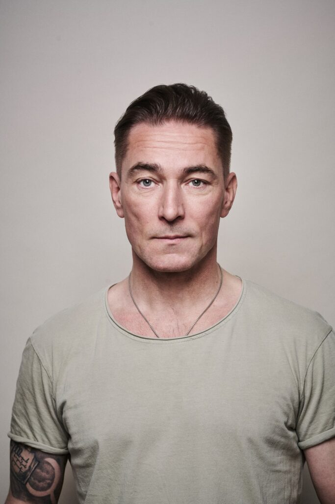

Georges ja Marion on pariisilainen pariskunta, joiden suhde on kriisissä. Georgesin bisnekset eivät suju, kiire ja stressi painaa. Mutta todellinen syy on se, että Georgesilla on jo pitkään ollut suhde nuoren Catherinen kanssa. Ja nyt Georgesin peli näyttää pelatun loppuun: Catherine on päättänyt paljastaa heidän suhteensa Marionille.
Silloin saapuu hyväntekeväisyysjärjestö Veljesavun Maurice ovelle kerätessään vaatelahjoitusia vähävaraisille. Hän haluaa noudattaa järjestönsä tunnuslausetta Sinun ongelmasi ovat jo meidän, ja tarjoaa auttavan kätensä. Kun asuntoon saapuu vielä muutama muu henkilö, kuten asunnonostajia sekä Catherinen kostonhimoinen poikaystävä, seuraa kiihtyvä tapahtumien ja sekaannusten sarja, jossa vaatteet vaihtava omistajaansa ja ihmiset nimiään.
Kangasalan kesäteatterissa saa ensi-iltansa kesän 2024 hulvattomin esitys. Seitsemän tv:stä tuttua näyttelijää esittää ranskalaisen farssin, josta ei yllättäviä käänteitä ja vaaralllisia tilanteita puutu. Esityksiä on myynnissä vain rajallinen määrä, joten osta oma lippusi nopeasti!
Raffy Shartin vuonna 1997 kirjoittama Vaimoni Maurice on noussut maailmanlaajuiseksi hitiksi, jota on tähän mennessä esitetty 44 maassa. Suomessakin näytelmää on esitetty lukuisissa teattereissa.
to 13.6.2024 18.00 pe 14.6.2024 18.00 ensi-ilta ti 18.6.2024 18.00 ke 19.6.2024 18.00 ti 25.6.2024 18.00 ke 26.6.2024 14.00 ja 18.00 to 27.6.2024 18.00 pe 28.6.2024 18.00 la 29.6.2024 14.00 ja 18.00 su 30.6.2024 14.00
HEINÄKUU
ke 3.7.2024 14.00 ja 18.00 to 4.7.2024 18.00 pe 5.7.2024 18.00 la 6.7.2024 14.00 ja 18.00 su 7.7.2024 14.00 ja 18.00 ti 16.7.2024 18.00 ke 17.7.2024 14.00 ja 18.00 to 18.7.2024 14.00 ja 18.00
Lippujen hinnat
Peruslippu 38 e Eläkeläiset 35 e Ryhmät min. 20 hlö. 34 e Lapset/nuoret/opiskelijat 32 e
Hinnat sisältävät arvonlisäveron ja palvelumaksun 3 e/lippu. Ostettaessa liput verkkokaupasta, hintoihin lisätään palvelumaksu 1,50 e/ostos.
Rooleissa nähdään tv:stä tutut näyttelijät: Pete Lattu, Teemu Lehtilä, Monika Lindeman, Inna Tähkänen, Sampsa Tuomala ja Sami Uotila. Ohjaaja Esko Kovero oli mukana työryhmässä, joka esitti näytelmän Törnävän kesäteatterissa 2000-luvun alussa.
Pete Lattu
Pete Lattu on vuonna 1979 syntynyt ja 2006 Teatterikorkeakoulusta valmistunut näyttelijä, yrittäjä ja monialainen puuhastelija.
Pete tunnetaan pitkästä rupeamastaan Salatut Elämät -sarjassa, mutta hän on työskennellyt myös Kansallisteatterissa, Helsingin ja Turun Kaupunginteattereissa, elokuvissa ja dubbaajana.
Vapaa-aikanaan Pete lentää varjoliitimellä, joten jos erehdyt mainitsemaan jotakin säästä, voit varautua polveilevaan pohdintaan kumpupilvistä ja ilmamassoista.
Tulevalta kesältä hän odottaa aurinkoisia päiviä, ratkiriemukasta teatterirupeamaa tutussa porukassa ja nauruherkkää yleisöä!
Teemu Lehtilä
Teemu on pitkän linjan freelance-näyttelijä joka on valmistunut Nätyltä vuonna 1989.
Jyväskylän, Helsingin ja Tampereen jälkeen Teemu on asettunut Lempäälään. Hän työskennellyt mm. Jyväskylän kaupunginteatterissa, Tampereen Teatterissa ja on tuttu myös lukuisista TV-rooleistaan.
Nyt kesällä 2024 Teemu nähdään Kangasalla Herra Behrs-Vacquot’n vauhdikkaassa roolissa. Kesäteatteri kuuluu olennaisena osansa Suomen suveen. Tervetuloa viihtymään ja nauramaan.
Monika Lindeman
Monika on näyttelijä, perheyrittäjä ja kahden alle kouluikäisen lapsen äiti.
Monika on työskennellyt freelance-näyttelijänä Suomen lisäksi myös Englannissa ja Norjassa, mutta muutti pysyvämmin takaisin kotikunnilleen Kauniaisiin vuonna 2015. TV-töiden ohella Monikan voi bongata Hotelli Nuuksion käytäviltä milloin missäkin askareissa ja perheyrittäjyys onkin hänelle sydämen asia.
Sosiaalisessa mediassakin Monika vaikuttaa aktiivisesti, mutta viikonloppuisin ja lomilla puhelin jää usein milloin mihinkin. Kaipuu takaisin teatterin lavalle on kolkutellut jo pitkään Monikan takaraivossa ja nyt hän astuu Marionin saappaisiin.
Sampsa Tuomala
Sampsa kasvoi näyttelijän poikana Kotkan Kaupunginteatterin lämpiössä ja yleisössä.
Nykyään Sampsa asuu ja vaikuttaa Helsingissä. Lukuisten kameratöiden lisäksi vapaa-ajalla Sampsa nauttii kalastuksesta, mökkeilystä, äänikirjoista ja kotisohvasta. Sampsa on viimeksi nähty teatterissa vuonna 2011 ja nyt hän tekee kauan odotetun paluun Rogerin rooliin.
Sampsa odottaa pääsyä lavalle kuumeisesti ja toivoo loistavia kalakelejä tulevalle kesälle! Nähdään Kangasalla.
Inna Tähkänen
Inna Tähkänen on näyttelijä ja musiikkiteatterin ammattilainen Tampereelta.
Innan on voinut nähdä useissa musikaaleissa Tampereen Työväen Teatterin lavoilla ja suomalaisissa tv-tuotannoissa mm. Salatut elämät ja Koskinen. Inna rakastaa kesää kaikissa sen muodoissa ja onkin hyvin innoissaan tulevasta kesästä Kangasalla!

Sami Uotila
Sami Uotila on näyttelijä ja kahden lapsen isä.
Sami on tullut tutuksi mm. Salattujen Elämien Aki Nikkisen roolista, sekä useista muista rooleista yli kymmenen vuoden ajalta Helsingin kaupunginteatterissa. Myös Autot elokuvien Salama McQueenin äänityö on ollut yksi Samin suosikkidubbauksista.
Kesäteatterit ovat aina olleet lähellä Samin sydäntä rennon ja positiivisen fiiliksen vuoksi, niin mikäs sen mukavampaa kuin hypätä Georgen rooliin Vaimoni Mauricen maailmaan rakkaiden kollegoiden kanssa!
Esko Kovero
Näyttelijänä tunnettu Esko esittäytyy nyt ohjaajan tehtävissä.
Esko on asuu Tampereella. Hän myöntää, että on tykännyt olla esillä jo pienestä pitäen, ja suomen kielen lehtorin kannustamana pääroolit joulu- ja kevätjuhlien näytelmissä tulivat tutuiksi. Perinteisiä arvoja kunniottava mies suuntasi kuitenkin ensin kohti työläisammatteja, joten instrumenttiasentajan paperit taskussa hän aloitti uransa sähkömiehenä Outokummun kaupungin palveluksessa.
Liittyminen laulu- ja ohjelmaryhmä Prolettiin antoi lopullisen sysäyksen ja rohkeuden pyrkiä Teatterikorkeakouluun, jonne hän pääsikin ensi yrittämällä 1979.
Kiinnitykset Vaasan ja Turun Kaupunginteattereissa sekä viimeisimpänä Tampereen Työväen Teatterissa vaihtuivat freelancer -uraan, ja Esko onkin vieraillut tamperelaisten teattereiden lisäksi mm. Raumalla.
Väliaikatarjoilu
Teatteriretkestä tulee täydellinen kun tilaa etukäteen väliaikatarjoilun. Tai varaa ennen esitystä pientä purtavaa.
HINNASTO
JUOMAT Kahvi 3 e Tee 3 e Kaakao 3 e Jaffa (0,5 l) 4 e Coca-cola (0,5 l) 4 e Alkoholiton olut (0,33 l) 4 e Kivennäisvesi (0,5 l) 4 e Lähdevesi (0,5 l) 3 e Omenamehu 2 e
KÄSIN LEIVOTUT TUOTTEET Makea piirakka 7 e Suolainen piirakka 7 e Cookiekeksi 3 e
MUUT TUOTTEET Makkara 3 e Jäätelötuutti 3 e
Varaa tarjoilu viimeistään kaksi arkipäivää ennen esitystä joko puhelimitse numerosta 040 617 3533 tai verkkolomakkeella.
Saapuminen
Tervetuloa Kangasalan kesäteatteriin!
Teatteri sijaitsee Mobilia -museon takana. Teatterille on helppo saapua autolla, bussilla, polkupyörällä ja veneellä. Teatterilla on parkkipaikkoja ja vierasvenelaituri